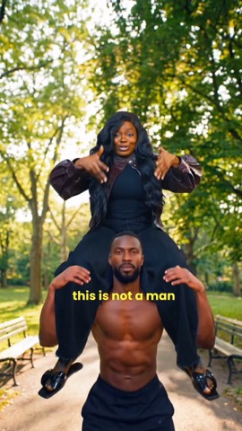
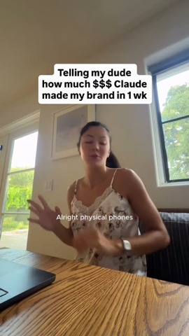
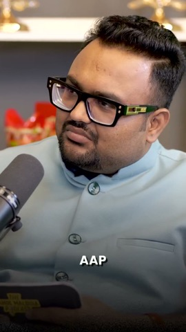
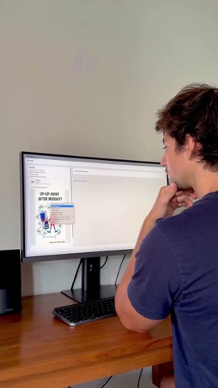
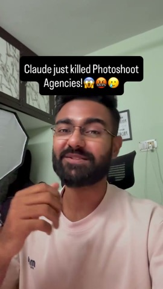
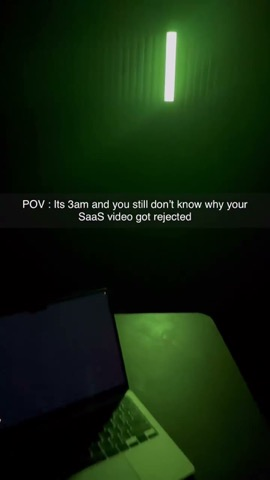
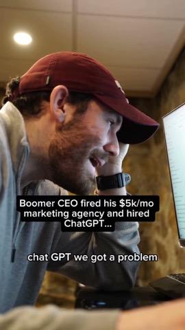
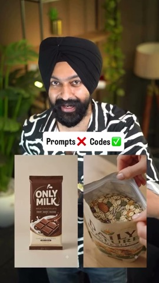

| @neuraltech.ai
1,632,699 plays · 97.3x median | AI UGC / AI influencer reveal | "I look totally real right. Well, I'm not. I'm an AI UGC creator." | AI influencers |
 | @misstechy
1,185,670 plays · 112.7x median | AI UGC / AI influencer reveal | "Actually guys, this is not a man lifting me up. It's AI." | AI influencers |
| @higgsfield.ai
2,523,472 plays · 11.4x median | AI UGC / AI influencer reveal | On-screen "AI" sticker over a hyper-real party crowd; caption "Officially, every viral AI influencer was made on Higgsfield" | AI influencers |
 | @askcatgpt
1,663,507 plays · 16.0x median | Reaction + screen walkthrough | On-screen "Telling my dude how much $$$ Claude made my brand in 1 wk"; spoken "all right so the cool phones have just been sitting in the warehouse, r | AI ads agent, all three features |
 | @rahulmalodiapodcast
2,053,912 plays · 61.8x median | Ad cloning / competitor ad spy | "Samajh lo ki main hi aapka competitor" ("Assume I am your competitor"); caption "What if you could legally spy on your competitor's ads and copy thei | Radar + clone |
 | @adrien.ninet
101,602 plays · 8.1x median | Ad cloning / competitor ad spy | "How to clone any winning ad for your brand in two minutes." | Clone any winning ad + Radar |
 | @priyanksinghofficial
869,932 plays · 86.9x median | Before/after product shot or ad creative | "bhai Claude ne photo shoot agencies ki to job khatam hi kar di" ("Claude just ended the photoshoot agencies' jobs") | Clone / AI creative from a product photo |
 | @abdullah4204k
324,152 plays · 14.8x median | Motion-graphics SaaS explainer | On-screen "POV: Its 3am and you still don't know why your SaaS video got rejected" | Any feature explainer (Radar / clone) |
 | @filmerbrian
979,085 plays · 23.3x median | Problem agitation (cooked / replaced my agency) | "ChatGPT we got a problem." / "I fired my marketing agency yesterday because I could just use you" | AI ads agent vs agency |
 | @rajphotoeditingmuchmore
1,441,397 plays · 4.4x median | Before/after product shot or ad creative | On-screen "Prompts X, Codes check" next to flat product packs; spoken "you no longer need to write prompts to make your product's video" | Clone / one product, many ad formats |
| @heystevetan
331,734 plays · 8.8x median | Reaction + screen walkthrough | "Mark Zuckerberg just made every media buyer obsolete this morning." | AI ads agent |
| @priyanksinghofficial
518,853 plays · 37.9x median | Problem agitation (cooked / replaced my agency) | On-screen "Claude just killed Meta Ads/Performance Marketers!" | AI ads agent |
| @storydrivenads_
66,022 plays · 16.8x median | Ad cloning / competitor ad spy | On-screen "No CGI just pure creativity. How they filmed this is insane" | Radar |
| @stevenwommack
3,099,409 plays · 4.6x median | Reaction + screen walkthrough | On-screen "HOW TO DO THIS..." over the finished effect | Clone |
| @cooper.simson
126,298 plays · 16.2x median | Problem agitation (cooked / replaced my agency) | "Everyone is bragging about how they fired their 5k a month ad agency and got Claude to run all their ads for them, but no one is actually showing you | AI ads agent |
| @thecoachbraydon
922,370 plays · 511.4x median | AI UGC / AI influencer reveal | "Claude can now make UGC videos, watch this." | AI influencers |
| @clovr.guy
1,387,165 plays · 92.9x median | AI UGC / AI influencer reveal | On-screen "wait...ChatGPT 6 Astra can do what?" | Clone / AI product commercial |
| @officialpwnkumar
1,693,393 plays · 9.2x median | AI UGC / AI influencer reveal | Split screen: AI UGC woman with a serum and a shocked face over the creator at his desk; "Claude + Creatify = fire" | AI influencers |
| @kayvon.ai
50,374 plays · 5.1x median | Ad cloning / competitor ad spy | Caption "Follow me then comment COPY and I'll send you the workflow to steal your competitors' best ads" | Radar + clone + AI influencers |
| @askcatgpt
595,607 plays · 4.7x median | Reaction + screen walkthrough | On-screen "How I got Claude making me 7x ROAS", green-screened over her own 1.2M-view reel | AI ads agent |
| @getripping
91,329 plays · 4.0x median | Motion-graphics SaaS explainer | On-screen "Stop selling AI tools. Sell the job."; spoken "The next billion dollar company will be one person and a laptop pretending to be an agency." | AI ads agent positioning |
| @adrien.ninet
171,232 plays · 22.6x median | Motion-graphics SaaS explainer | On-screen "in 10 minutes." | Any feature explainer |
| @motion.buoy
143,590 plays · 34.0x median | Motion-graphics SaaS explainer | Caption "This high-end saas text animation is going super viral these days, so here's my recreation" | Radar / clone punch line |
| @mimi_ojieh
375,007 plays · 8.5x median | Before/after product shot or ad creative | On-screen "CREAT SIMILAR IMAGE FOR YOUR BRAND FOR FREE!" (sic), creator green-screened under a Nivea billboard ad | Clone any winning ad |
| @maggiemcgaugh
2,444,942 plays · 5.1x median | Before/after product shot or ad creative | "I knew these were fake but I bought them anyways." | Clone (product truth angle) |
| @__diditee__
341,616 plays · 1.4x median | Before/after product shot or ad creative | On-screen "HOW TO CREATE INSANE MACRO SHOTS FOR YOUR PRODUCT ADS!" over a macro watch shot | Clone / product shots |
| @vibemarketer_
104,235 plays · 83.1x median | AI UGC / AI influencer reveal | "Check this out. Hey guys, welcome to my morning routine." | AI influencers |